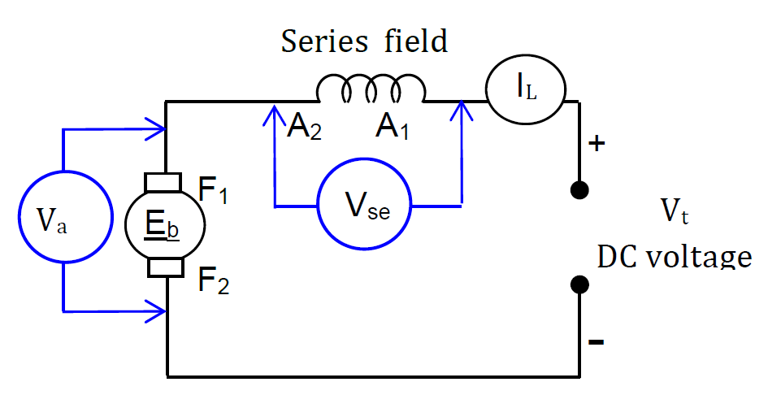

A DC series motor is an electrical machine in which the series field winding is connected in series with the armature winding. The motor converts electrical energy into mechanical energy.
This Virtual Laboratory allows students to practise the wiring and investigate the electrical parameters of a DC series motor.
Note: The readings in this Virtual Laboratory are simulated values for educational purposes.
2. Learning Objectives
Understand the operating principle of a DC series motor.
Identify the series connection between the field winding and armature.
Construct the DC series motor circuit using the virtual terminals.
Measure line current, armature voltage and series-field voltage.
Investigate the relationship between terminal voltage, current and motor speed.
3. Theory
In a DC series motor, the series field winding and armature winding are connected in series. Therefore, the same current flows through the series field and armature.
IL = Ia = Ise
The applied terminal voltage is approximately divided between the armature and series-field circuits:
Vt = Va + Vse
STEP 4: Virtual Wiring Practice
DC SERIES MOTOR – VIRTUAL WIRING PRACTICE
Practice the circuit connection virtually before performing the wiring on the actual DC series motor.
CIRCUIT DIAGRAM (REFERENCE)

VIRTUAL WIRING BOARD (CLICK TERMINALS TO CONNECT)
IL
Line Current
A
Eb
⚙
A1 A2
SERIES FIELD
〰
F1 F2
Va
Armature Voltage
V
Vse
Series Field Voltage
V
+
Vt
DC VOLTAGE SUPPLY
−
+
−
+
−
A1 +
A2 −
F1 +
F2 −
+
−
+
−
Positive (+) Negative (−) Selected
HOW TO USE
Click the first terminal.
Click the second terminal to create a wire.
Follow the circuit diagram (reference).
Complete all connections correctly.
Press RESET to clear all connections.
REQUIRED CONNECTIONS
STATUS
🔵 Please start connecting the circuit according to the diagram.
5. Virtual Experiment – Meter Reading & Measurement
DC SERIES MOTOR CIRCUIT
ANALOG INSTRUMENTS
LINE AMMETER (IL)
0.00 A
ARMATURE VOLTMETER (Va)
0.00 V
SERIES FIELD VOLTMETER (Vse)
0.00 V
DC SERIES MOTOR
MOTOR STOPPED
Terminal Voltage Control
Terminal Voltage: 0 V
0 V220 V
Digital Readings
TERMINAL VOLTAGE
0
V
ARMATURE VOLTAGE
0
V
SERIES FIELD VOLTAGE
0
V
LINE CURRENT
0.00
A
SPEED
0
RPM
TORQUE
0.00
Nm
6. Experimental Procedure
Set the terminal voltage to 0 V.
Complete the virtual wiring correctly.
Click START.
Gradually increase the terminal voltage.
Observe the line ammeter IL.
Observe the armature voltmeter Va.
Observe the series-field voltmeter Vse.
Record the motor speed and torque.
Repeat for different voltage values.
Click STOP when finished.
7. Safety Note
This Virtual Laboratory is a computer simulation intended for educational purposes. Always follow the appropriate safety procedures when operating an actual DC motor laboratory setup.
8. Conclusion
In a DC series motor, the same current flows through the armature and series-field winding. The virtual experiment helps students understand the voltage, current, speed and torque relationships of the motor.